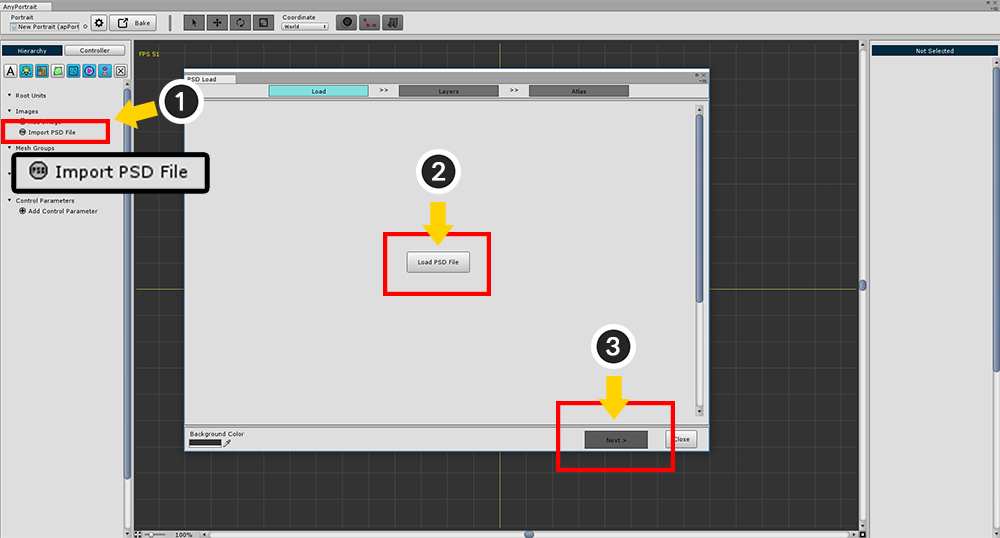
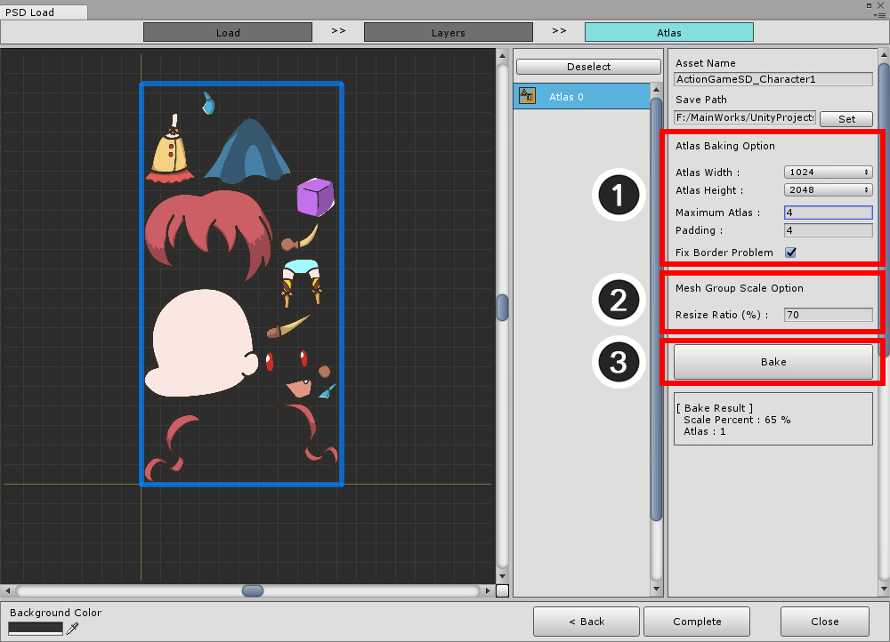
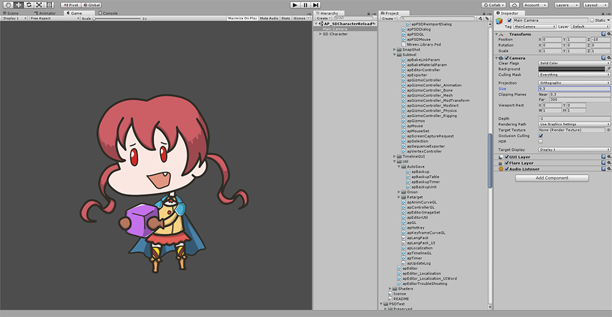

AnyPortrait > Manual > Importing a PSD File
Importing a PSD File
1.0.6

To import a PSD file with layer information (1) Press the Import PSD File button.
When the PSD Load dialog appears, (2) click Load PSD File button in step 1.
If the PSD file is open (3) Press the Next button to proceed to the next step.

In step 2, you can select the layer you want to bake and set the clipping.
By default, it follows the settings of the PSD file, and automatically recognizes the folder (group).
(1) Determines the clipping settings of the selected layer and whether to include it in the bake.
If you have finished all the steps, (2) press the Next button.

In Step 3, combines each layer image into several Atlas.
Before creating Atlas, specify (1) Atlas name and (2) Path to be saved as Texture Asset.
When this process is complete, a button to Bake Atlas appears.

Press the Bake button to create an Atlas.
1. Asset Name : Atlas name. This becomes the name of the Texture Asset.
2. Save Path : The path to save the Texture Asset. It must be located in a subfolder of the Assets folder.
3. Atlas Width / Height : Atlas image size.
4. Maximum Atlas / Padding : The maximum number of atlas to be baked, and the spacing of each image.
5. Fix Border Problem : Resolves blending problems that can occur where transparency is zero when the image is scaled.
6. Bake Button : Create Atlas as you currently have settings.
7. Atlas Information : The percentage of shrinking from the actual image and the number of Atlas braked appear.
8. Complete Button : Create a batched Atlas as a Texture Asset and import it into AnyPortrait, including layer information.
9. Atlas List : It's the Atlas who bake. Once selected, you can view the details in the preview window.
10. Preview : This is the screen to check Atlas. You can move, zoom in / out using the mouse wheel button.
11. Background Color : The background color of the preview screen.

If you modify the Bake settings, the blue Atlas information will appear as above.
Check the changed Atlas information, press the Bake button to create the Atlas again, and press the Complete button.
Determining the image reduction ratio of Atlas
When you want to separate images created by PSD into layers and combine them into Atlas, you have no choice but to shrink the image.
If you want to prevent the image from resizing or keep the prototype as much as possible, you can set it as follows.
1. Increase Atlas Width, Height.
2. Increase the Maximum Atlas value. (In fact, a smaller Atlas will be created.)
3. Reduce padding. (Not recommended)
Even if it is set as above, the image may be reduced inevitably.
If the image size of a specific layer is larger than Atlas Width, Height, the image will be reduced to less than 100%.
We recommend that you use a pre-resized PSD file of the appropriate size for your game.
Set the size of the generated mesh group
1.0.6

Atlas settings have changed some since v1.0.6.
1. Atlas Bake Settings : These are the settings for creating Atlas.
2. Mesh Group Scale Option : This is a new function. You can set the size ratio of the actual mesh group based on the size of the PSD file. At 100%, use the pixel coordinates of the PSD file. It does not depend on the Atlas zoom ratio.
3. Bake button : Create Atlas.
Modifying characters created from PSD

Atlas images and meshes were created automatically to match the configuration of the PSD file.
(1) Select the created mesh group, and (2) press Set Root Unit button to register as root unit.

(1) Press the Bake button, (2) Check the settings in the Bake dialog box, and then Bake to the scene.

You can see that it applies to Unity as same as PSD illustration.

When you convert a PSD to a mesh, it is created as a square mesh regardless of the image.
(1) Select a mesh.
(2) Select the Make Mesh tab.
(3) Press the Remove All Vertices button and (4) press the Remove All button.

Create a mesh manually to fit the image.
This should be done for every mesh, and it takes a lot of time and effort.